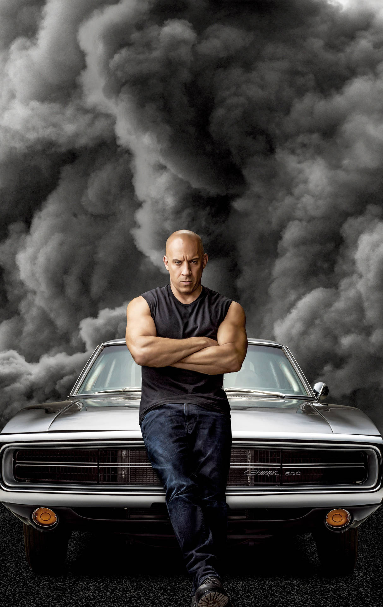
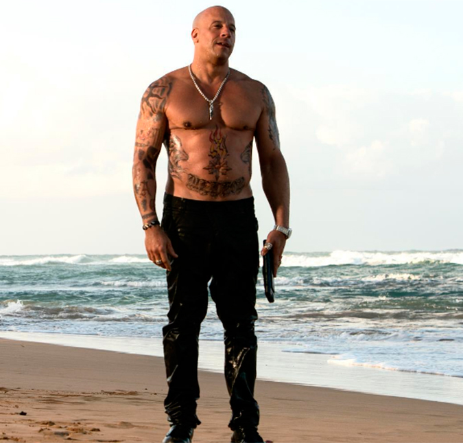

Mark Sinclair Vincent was born on July 18, 1967. His mother, Delora Sherleen Vincent, is an astrologer. He was raised by his white mother and adoptive African-American father, Irving H. Vincent, an acting instructor and theater manager.Diesel has stated that he is "of ambiguous ethnicity. His mother has Scottish roots. He has never met his biological father, and has said that "all I know from my mother is that I have connections to many different cultures"; Diesel believes that his parents' relationship would have been illegal in parts of the United States due to anti-miscegenation laws.
Diesel made his stage debut at age seven when he appeared in the children's play Dinosaur Door, written by Barbara Garson. The play was produced at Theater for the New City in New York's Greenwich Village. His involvement in the play came about when he, his brother and some friends had broken into the Theater for the New City space on Jane Street with the intent to vandalize it. They were confronted by the theater's artistic director, Crystal Field, who offered them roles in the upcoming show instead of calling the police. Diesel remained involved with the theater throughout adolescence, going on to attend Hunter College in New York City, where studies in creative writing led him to begin screenwriting. He dropped out of Hunter to pursue acting. He has identified himself as a "multi-faceted" actor.
Sinclair began going by his stage name "Vin Diesel" while working as a bouncer at the New York nightclub Tunnel, wanting a tougher sounding name for his occupation. Vin comes from his mother's married last name Vincent, while the surname Diesel came from his friends due to his tendency to be energetic.

1990–1999: Early struggle and debut
Diesel in 2005 Diesel's first film role was as an uncredited extra in the drama film Awakenings in 1990. After several years of struggle to gain acting roles, Diesel
decided to make his own short film to secure funds for his feature film debut. In 1994, he wrote, directed, produced, and starred in the short drama film Multi-Facial, a
semi-autobiographical film which follows a struggling multiracial actor stuck in the audition process. The film was selected for screening at the 1995 Cannes Film
Festival. As well as acting, Vin Diesel supported himself by working as a bouncer and telemarketer selling lightbulbs.
In 1997, Diesel secured funds to make his first feature-length film, Strays, an urban drama in which he played a gang leader whose love for a woman inspires him to try to
change his ways. Written, directed, and produced by Diesel, the film was selected for competition at the 1997 Sundance Festival, leading to an MTV deal to turn it into a
series which never came to fruition. Director Steven Spielberg took notice of Diesel after seeing him in Multi-Facial and cast him in a small role as a soldier in his
1998 Oscar-winning war film Saving Private Ryan. This marked Diesel's first major Hollywood film role. In 1999, he provided the voice of the title character in the
animated film The Iron Giant.